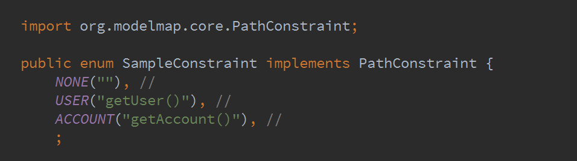

Gilles DI GUGLIELMO - Julien BAUDRY
Java Developer since 1999
Software Architect at LesFurets.com
Java Developer since 2007
Software Architect at LesFurets.com


One for each field, specify which getter to use
TODO why generation base on reflection on the classpath (multi modules)
TODO why not apt (limitations)
TODO execution configration
TODO describe pattern generation of field info
TODO describe pattern generation of field info
TODO usage for C* persistence
Domain can be manipulated as a stream of key/value pair
TODO : diff model
TODO : C* persistence